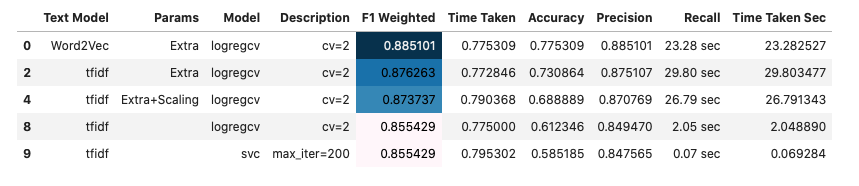
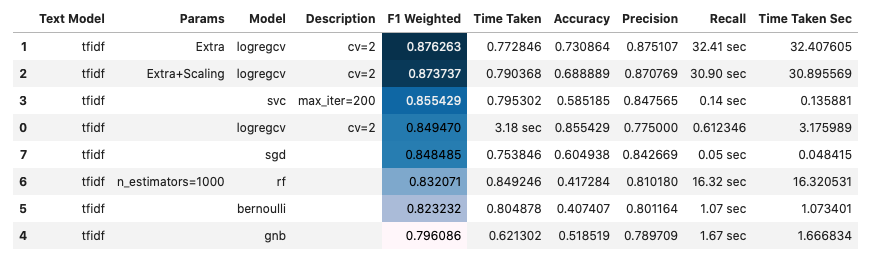

In this project, I took the data from Analytics Vidhya Hackathon: Identify the sentiments. This is an online competition platform for data science projects and in this NLP project I achieved the position on 12th among thousands of participants.
Example tweet:
#fingerprint #Pregnancy Test https://goo.gl/h1MfQV #android #apps #beautiful #cute #health #igers #iphoneonly #iphonesia #iphone
Cleaned text:
fingerprint pregnancy test android aps beautiful cute health igers iphoneonly iphonesia iphone
hashtags:
#fingerprint #Pregnancy #android #apps #beautiful #cute #health #igers #iphoneonly #iphonesia #iphone
We have 7920 training tweets.
We also have 1953 test tweets without label. (we need to upload the test predictions to get the weighted F1 score.)
| Notebook | Valid F1 | Test F1 |
|---|---|---|
| b01_sentiment_analysis_modelling_bow_word2vec_tfidf | 0.885101 | |
| b02_sentiment_analysis_modelling_tfidf | 0.876263 | |
| --- | --- | --- |
| c01_sentiment_analysis_ktrain | 0.88 | |
| c01b_sentiment_analysis_ktrain_neptune | 0.924609 | 0.907575 |
| c01c_sentiment_analysis_ktrain_neptune_hpo | 0.917368 | 0.877973 |
| c02_sentiment_analysis_simpletransformers_wandb_roberta_full_data | ||
| --- | --- | --- |
| d01_sentiment_analysis_keras_lstm | 0.860 | 0.83785 |
| d02_sentiment_analysis_keras_gru_gbru | 0.871895 | |
| --- | --- | --- |
| e01_sentiment_analysis_small_data_transformers_distilbert_torch | 0.9120 | |
| e02_sentiment_analysis_transformers_distilbert_keras | 0.663583 | |
| e03_sentiment_analysis_bert_tf2 | 0.884748 | |
| e03b_sentiment_analysis_bert_tf2_neptune | 0.8787 |
 
Tokenizer and sequence.We don't need data cleaning.
supports 'fasttext' 'nbsvm' 'logreg' 'bigru' 'bert' 'distilbert'.
(X_train, y_train), (X_valid, y_valid), preproc = \
ktrain.text.texts_from_df(df_train,
text_column=maincol,
label_columns=[target],
random_state=SEED,
ngram_range=1,
max_features=20000,
val_df = None, # if not 10% of train is used
maxlen=500,
preprocess_mode='bert')
model = ktrain.text.text_classifier(name='bert',
train_data=(X_train, y_train),
metrics=['accuracy'],
preproc=preproc)
learner = ktrain.get_learner(model=model,
train_data=(X_train, y_train),
val_data=(X_valid, y_valid),
batch_size=6)
predictor = ktrain.get_predictor(learner.model, preproc)
test_preds = predictor.predict(X_test,return_proba=False)
best_so_far = """
bert lr=2e-5 epochs=5 ngram_range=1 maxlen=300
f1 = 0.908687336005899
n_gram=2 gave worse result
tweet_clean_emoji gave worse result
bert lr=2e-5 epochs=5 ngram_range=1 maxlen=400
f1 = 0.908265806079951
bert lr=2e-5 epochs=5 ngram_range=1 maxlen=300 maincol=tweet_clean
f1=0.877973006703751
"""
from simpletransformers.classification import ClassificationModel
model_type = 'xlnet'
model_name = 'xlnet-base-cased'
model = ClassificationModel(model_type, model_name, args=train_args)
model.train_model(df_train, eval_df=None)
test_preds, _, = model.predict(df_test['tweet'].to_numpy())
# Here, train_args is following:
train_args = {
"reprocess_input_data": True,
"overwrite_output_dir": True,
"use_cached_eval_features": True,
"output_dir": f"outputs/{model_type}",
"best_model_dir": f"outputs/{model_type}/best_model",
"train_batch_size": 128, # it was 128
"max_seq_length": 128, # 256 gives OOM
"num_train_epochs": 3,
# evaluation
"evaluate_during_training": False,
"evaluate_during_training_steps": 1000,
"save_model_every_epoch": False,
"save_eval_checkpoints": False,
"eval_batch_size": 64,
"gradient_accumulation_steps": 1,
}
train_args["wandb_project"] = "sentiment-analysis"
train_args["wandb_kwargs"] = {"name": model_name}
if model_type == "xlnet":
train_args["train_batch_size"] = 64
train_args["gradient_accumulation_steps"] = 2
string column => list column => unq words, max lentokenizer => texts_to_sequences => pad_sequencesparams and callbacksSequential => Embedding,GRU,GRU,Dense,Dropout,Dense => compile => summaryfit => predict_classes# data
mycol = 'tweet_clean'
mylstcol = 'tweet_lst_clean'
X_train = [i for i in df_Xtrain[mylstcol]] # list of list
X_valid = [i for i in df_Xvalid[mylstcol]]
X_test = [i for i in df_test[mylstcol]]
# get unique words
unq_words = set()
maxlen = 0
for lst in tqdm(X_train):
unq_words.update(lst)
maxlen = len(lst) if maxlen < len(lst) else maxlen
# tokenization
from keras.preprocessing.text import Tokenizer
num_words = len(unq_words)
tokenizer = Tokenizer(num_words=num_words)
tokenizer.fit_on_texts(X_train)
X_train = tokenizer.texts_to_sequences(X_train)
X_valid = tokenizer.texts_to_sequences(X_valid)
X_test = tokenizer.texts_to_sequences(X_test)
# sequence
from keras.preprocessing import sequence
X_train = sequence.pad_sequences(X_train, maxlen=maxlen)
X_valid = sequence.pad_sequences(X_valid, maxlen=maxlen)
X_test = sequence.pad_sequences(X_test, maxlen=maxlen)
# modelling
from keras.callbacks import EarlyStopping
from neptunecontrib.monitoring.keras import NeptuneMonitor
early_stopping = EarlyStopping(min_delta = 0.001, mode = 'max',
monitor='val_acc', patience=10)
callbacks = [early_stopping,NeptuneMonitor()]
# params
# parameters
PARAMS = {'epoch_nr': 5,
'batch_size': 256,
'lr': 0.001,
'dropout': 0.2}
# model
model = Sequential()
# input_dim=num_words and output_dim=300
model.add(Embedding(num_words,300,
input_length=maxlen))
model.add(GRU(units=128,
dropout=PARAMS['dropout'],
recurrent_dropout=PARAMS['dropout'],
return_sequences=True))
model.add(GRU(64,
dropout=PARAMS['dropout'],
recurrent_dropout=PARAMS['dropout'],
return_sequences=False))
model.add(Dense(100,activation='relu'))
model.add(Dropout(PARAMS['dropout']))
model.add(Dense(1,activation='sigmoid'))
# for multiclass: dense=(num_classes,softmax) and loss=sparse_xentropy
model.compile(loss='binary_crossentropy',
optimizer=Adam(lr=PARAMS['lr']),
metrics=['accuracy'])
model.summary()
# fitting
history = model.fit(X_train, y_train,
validation_data=(X_valid, y_valid),
epochs=PARAMS['epoch_nr'],
batch_size=PARAMS['batch_size'],
verbose=1,
callbacks=callbacks
)
valid_preds = model.predict_classes(X_valid)
valid_preds = valid_preds.squeeze().tolist()